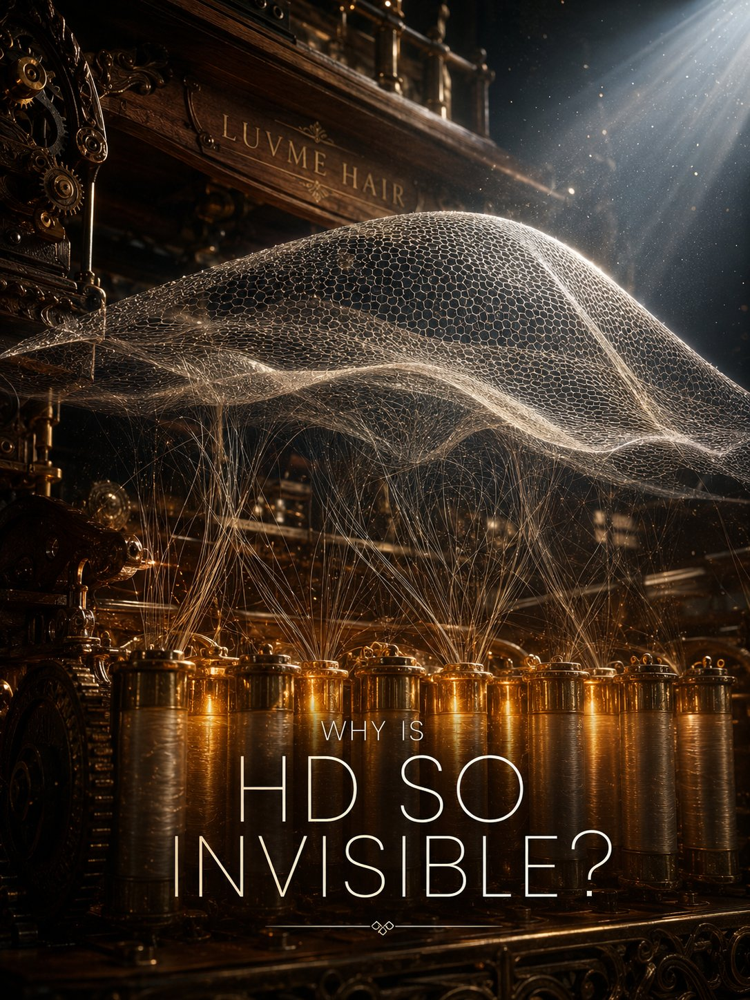
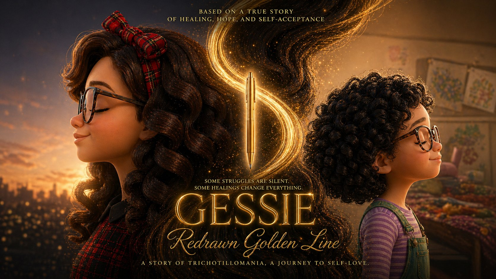
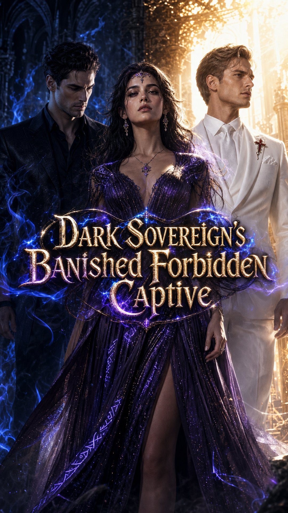
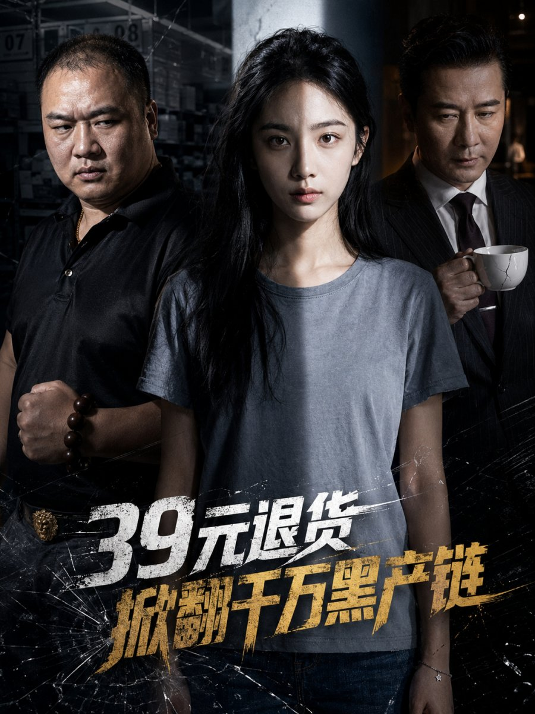

BRAND FILM
LUVME HAIR — Why Is HD So Invisible?
蒸汽朋克风格的发质科普品牌视觉，用 AI 全流程制片打造高质感商业内容。
WHAT I DO
Selected Work

蒸汽朋克风格的发质科普品牌视觉，用 AI 全流程制片打造高质感商业内容。

皮克斯动画风格的品牌叙事短片，从角色设计到光影氛围全链路 AIGC 制作。

暗黑奇幻风格的短剧概念海报，用 AI 工具链实现不可拍摄场景的低成本视觉化。

纪实悬疑风格的短剧视觉，用 AI 全流程制片将社会议题转化为高冲击力的叙事画面。
Creative Lab
一个由视频编导跨界、用 AI 自然语言独立创作的情绪抚慰交互工具。它不是冰冷的效率产品，而是给高敏感人群的一块缓冲垫。
About
"这些年我服务过众多大客户，深知商业需求往往有其严谨限制。但创意不该被掐灭，AIGC 的出现，给有脑洞、懂视听的人一次重新天马行空的机会。"
短视频编导、创意策划、客户协同与交付。
从概念视觉到动态影像，建立可复用的 AI 制片链路。
用 AI 工具把创意灵感快速转化为可体验的内容作品。
Contact